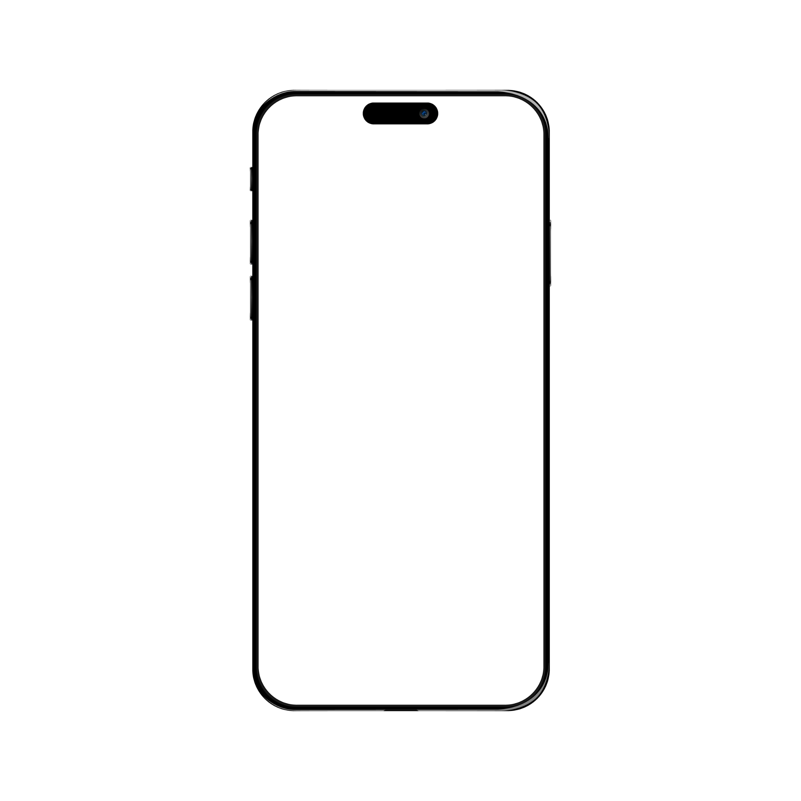

Based on Bootstrap 5.
Update every single element in all new
Slick, individually and Flawlessly.

CSS Helper Classes
Easily change and tweak your gaps, spaces, borders, fonts, sizes, colors, weights and almost everything with 2500+ featured inside the Slick.
Save Your Bucks
Buy the developer license once and Slick is yours forever. Don’t waste money on generic templates. Do multiple projects for you.
Copy + Paste / Drag + Drop
Edit and design in a seamless manner. Copy and paste or drag and drop any sections, anywhere.